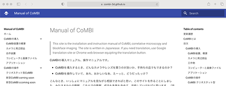

Manual of CoMBI
This site is the installation and instruction manual of CoMBI; Correlative Microscopy and Blockface Imaging. All pages were initially written in Japanese. I am trying to make it in both English and Japanese.
If you need other language imediately, try Google translation; English, Bahasa Indonesia, Mongolian, etc.
Dear users; Thank you for sharing your usage information. It has been helping to increase the stability of the device. The information shared here is only technical matters related to CoMBI, thus it is anonymous to avoid mentioning your research content.
このサイトは、CoMBIの導入および操作マニュアルです。「CoMBIを導入するとき、どんなカメラやレンズを買うのが良いか、手持ちの品でもできるのか？」「CoMBIを操作していて、あれ、おかしいなあ、えーっと、どうだったっけ？」こんなとき、いっしょにマニュアルを見ながら相談できればと思い、このサイトを作ることにしました。ユーザのみなさまからの情報、こちらにある情報、成功も失敗も含めて、共有していければと思います。
ユーザのみなさま；さまざまな情報をお寄せいただきありがとうございます。おかげさまでCoMBI装置、手法ともに安定性が増しています。ここで共有する情報は、CoMBIに関する技術的なものとしています。研究内容には触れないようにしている関係で、匿名またはイニシャルとしています、ご了承ください。
How to find information / 知りたい情報を探す
Display with enough width, then you will find 3 colomn view. There are contents of whole site, main document, and contents of the document you display. Smart phone can display this site but the contents window will be simplified. Search window is available at top-right.

ブラウザのウィンドウをヨコに広げると、3カラムで表示されます。左：サイト全体の目次、中央：本文、右：各ページ内の項目。これらをご利用ください。スマホでも観られますが、目次や項目が簡略なものになります。検索窓を日本語対応で設けましたが、検索結果は完璧ではないようです。
What's new / 更新履歴
2021.4.23 新版ImageJ/FIJIのバグ対応を更新（Thank you! T） 2021.4.6 Extended depth of Field/深度合成 2021.4.16 Icy (in practicing)
2021.3.17, 2.24 Camera settings/カメラ設定を詳細に記載（Thank you! W) 解説、具体例、ヒント、絞りの効果の図）
2021.2.1 Site opend. I am trying to update day by day. 今は、ほぼ文字だけで、少しずつ画像も加えようと思っていますが、サイトを軽くしたいので、ほどほどにします。ご相談あれば、メール、Zoom、Teams、WedEXどれでも対応します。
Dear first-time visitors / 初めての方へ
Thank you for your visit to this site. CoMBI is a method to correlate 2D images from microscopy of thin-section specimens with 3D images from block-face imaging; we named it Correlative Microscopy and Block-face Imaging and released it in June 2017 Scientific Reports (2017) 7:3645 External link.
Making sections of biological specimens and observing them under a microscope is a very common practice in biological research. But there has been a problem.
"Where did you get that section of the sample from?"
If you have 3D information about the specimen and can show where the sections were taken, the micrographs are easier to interpret and more reliable. The CoMBI method does just that: it cuts a single frozen specimen in a cryostat and does two things (1) All block faces are photographed. (2) During the process, frozen sections are collected when necessary. The serial images of the block planes are then reconstructed into 3D images on the computer, while the sections are stained and used for microscopic observation. As a result, it is possible to correlate 3D images with 2D microscopic images of a single specimen. Such correlation is expected to contribute to improve the reliability of morphological analysis. Another feature of the 3D imaging method is that it is cheap and easy to start. As long as you have a microtome, all you need is a commercially available camera, accessories, and a computer to perform 3D imaging (see Overview of CoMBI system). Another feature of the CoMBI is the variety of samples that can be observed. We have succeeded in 3D imaging of various biological specimens (see Portofolio or Publications).
My research field is "Membrane vesicle traffic in multinucleated cells". Keywords are "skeletal muscle cells, muscle differentiation, muscular dystrophy, myasthenia gravis, C2C12 cells, cell polarity, membrane vesicle transport, SNARE proteins". Main research techniques have been classical morphological techniques such as light microscopy (cryosectioning, paraffin sectioning, whole mount, antibody staining), electron microscopy (pure morphology, immunoelectromicroscopy, Tokuyasu method), and recently I have been developing new techniques (CoMBI). CoMBI was developed because it was necessary for morphological analysis of knockout mice.
The keywords of my past experience are "renal epithelial cells, channel proteins, macrophages, lectins", and I was responsible for morphological analysis. My current field of teaching is "Anatomy", i.e. morphology.
ご来訪ありがとうございます。CoMBIは、薄切標本の顕微鏡観察による2D画像と、ブロックフェースイメージングによる3D画像を相関させる方法です。Correlative Microscopy and Block-face Imaging = CoMBI と名付け、2017年6月にリリースしました。Scientific Reports (2017) 7:3645 外部リンク
生物標本を切片にして顕微鏡で観察することは、生物学研究ではごく一般的なことです。でも、悩みがありました。
「その切片、試料のどこからとってきたの？」
もし、試料の3D情報があって、切片をとってきた場所を示せれば、顕微鏡写真を解釈しやすく、信頼性もあがります。CoMBI法は、そんな望みをかなえます。CoMBI法では、一つの凍結標本を、クリオスタットで切削しながら、以下の二つのことを実行します。(1) すべてのブロック面を撮影します。(2) 途中、必要なときに凍結切片を回収します。その後、ブロック面の連続画像は、コンピュータ上で３D画像に再構築され、一方、凍結切片は染色などを行い顕微鏡観察につかいます。その結果、1つの標本で、3D 画像と2D顕微鏡画像を相関させられるようになります。このような相関は、形態解析データの信頼性向上に貢献すると期待しています。また、3Dイメージング法としては安くてお手軽に始められることが特徴です。ミクロトームさえあれば、あとは市販のカメラとカメラ用品、パソコンを用意して、3Dイメージングができます（CoMBI装置の概要のページへどうぞ）。観察できる試料が多様なことも特徴です。これまでに様々な生物試料で3Dイメージングに成功しています（作品集または発表論文などのページへどうぞ）。
研究分野は「多核細胞における膜小胞輸送」です。キーワードは、「骨格筋細胞、筋分化、筋ジストロフィー、筋重症無力症、C2C12細胞、細胞極性、膜小胞輸送、SNAREタンパク質」。主な研究技術は、「光学顕微鏡（凍結切片、パラフィン切片、ホールマウント、抗体染色）、電子顕微鏡（純形態、免疫電顕、徳安法）」といった、古典的な形態学技術でしたが、近年は新しい技法の開発（CoMBI）へと邁進中。CoMBIはノックアウトマウスの形態解析で必要になったため開発したものです。
過去の経験を示すキーワードは、「腎上皮細胞、チャネルタンパク質、マクロファージ、レクチン」で、形態解析を担っていました。現在の教育担当分野は「解剖学」で、やっぱり形態を扱っています。